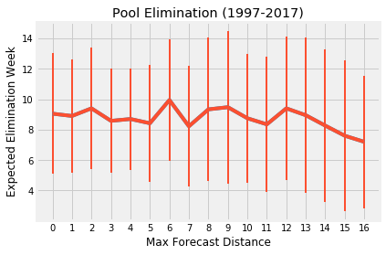
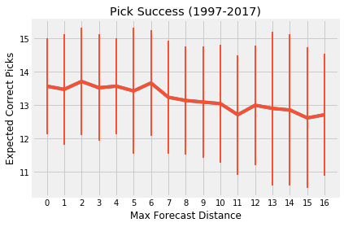

NFL Pickem¶
Author: Adam J. Vogt
The goal of this project is to make an optimal selection of sequential picks of which NFL team will win their particular matchup each week.
A Quick Start Guide, the project To-Do List, historical forecasting success can be found below
Context: Survivor Pool¶
In a survivor pool game, each player must select one NFL team each week that the player thinks will win their particular NFL matchup. Multiple players may select the same team in a particular week. Players are eliminated from the pool when they reach a set threshold of incorrect picks (e.g. Player A is eliminated in week 6 after making two incorrect picks, one in week 4 and the other in week 6). The other constraint is that each Player can maximally pick each team once throughout the season (e.g. Player B selected the New England Patriots last week and therefore cannot select them in future weeks.)
Given these constraints, a Player would like to make a sequence of picks where their selected NFL teams will have the lowest liklihood of losing (or in some cases drawing) in the week of selection. Because each team can only be selected once, there is a tradeoff between selecting the team with highest liklihood of winning this week or saving that team for a future week in which there are worse alternative matchups.
The final consideration is the estimation of a team's liklihood of success in this week versus in that of a future week. Both the magnitude of the likelihood and the confidence in that estimation for future weeks are factors that affect this selection tradeoff.
Methods¶
Two things are needed to make an optimal selection of sequential picks: 1. a numerical estimation of the liklihood that a team will win thier particular matchup in a given week, and 2. an objective to maximize that will increase chances of survival in the pool.
For the first point, we use FiveThrityEight's ELO Ratings model for NFL game predictions. The ELO ratings are combined with home field status to estimate the liklihood that a team will win their particular matchup. Since the rating does not use time or week of the season as an input, the current rating can be used to estimate that probability for any future matchup. Ratings are adjusted after each week to account for the team's latest performance. Historical data can be found here. An explanation of the model can be here.
For the second point, we then use these win probabilities to build an objective. We use a linear mixed-integer optimization to maximize the log of the product of the win probabilities for the sequence of picks. This approximates the probability that all picks will be a success and that there will be no incorrect selections. The problem is constrained by the bounds of the survivor pool game; 1. One and only one team/matchup can be selected each week, and 2. Each team can be selected maximally one time.
Because of the uncertainty in the estimation of future liklihood of success, optimal sequences of any length can be calculated and the risks of trading present liklihoods versus future ones can be left to the player.
To-Do¶
- [x] Build API structure
- [x] initialize by pulling data and creating table
have file name/location be an attribute. - [x] have method for calculating outcomes
have attributes for prior picks, number of weeks to cover and and how many possible picks each week (or probability threshold) to consider - [x] create script to compare forecasts of picks
- [x] Run analysis on historical outcomes for picking structure
- [ ] Analyze prediction accuracy for future games
- [ ] Incorporate FiveThirtyEight's new Quarterback adjustment model
Quick Start Guide¶
Be sure to have Python 3 installed on your machine. For some of these instructions it is useful to have a bash terminal. For Windows users, Git Bash is a great option. To ensure python is installed correctly, open a terminal (or command line terminal in windows), and enter
$ python
if a python kernel does not open, then it is
incorrectly installed. If you are a windows user, and you trust
that I am not malicious, you can double click the install.bat
shell script to auto install and skip the steps below. Similarly,
you can also use the run_make_picks.bat file to automatically
run the python script. Just be sure to update the parameters in
step #4 below.
Note that the qb_elo_model
parameter of the build_schedule() method is still
not functional. Only the basic elo model can be
used for now.
- Clone/download a copy of this repository.
$ git clone git@github.com:ajvogt/nfl-pickem.git
- For the folder containing the repo, install requirements.
- Use the first two commands
if you want to protect your local environment, or skip if you are
unconcerned. Use
venv/bin/activatefor mac.
$ virtualenv venv
$ source venv/Scripts/activate
$ pip3 install -r requirements.txt
-
Make sure you have the latest copy of the FiveThirtyEight ELO Ratings and matchups .csv file in the
/datafolder. -
For incomplete seasons, you will need to fill out the matchup information for the season and at least one ELO rating per team in the week of their earliest appearance. For best results, ensure an updated ELO rating at each week.
-
Change the parameters in the
make_picks.pyscript and save.
season=2017
current_week=9
prior_picks=['NE', 'NO', 'SEA', 'BAL', 'LAR',
'DEN', 'JAX', 'PIT']
auto_update = True # pull data from FiveThirtyEight
visualize_results = False # beta version
- Run the script.
$ python make_picks.py
- Profit
Discussion & Ideas¶
Forecasting Success¶
When using a different maximum number of forecasting weeks for the optimization (e.g. how many weeks in the future to consider for pick tradeoffs), there is a slight trend in towards lower expected elimination week and total number of picks correct over the season.
Here, the last two decades (seasons 1997-2017) are used to validate the optimization by running varying forecast distances and comparing with actual outcomes of the picks. Elimination week is determined by the week of the second incorrect pick, and total correct is the number of correct picks the player would make during the regular season if there was no elimination. Error bars represent the standard deviation over the seasons in consideration. The forecasting size is the maximum number of weeks over which to consider picks for the optimization. For instance, for a forecasting size of 5, the player would only consider this week plus the next 5 weeks in the future and make the appropriate tradeoffs in order to maximize the liklihood of have zero incorrect picks over those 6 weeks. For weeks with 5 games of the final week, the forecasting is limited to the number of weeks remaining in the season (e.g. only considering the additional 2 picks for the last 3 weeks of the season).


Ultimately, there is a lot of season to season variation without a significant signal towards choice of forecast size. While the trend points towards smaller forecast sizes, the season will be the biggest determination in expected elimination week. This is probably to be expected given the variability in win expectation in NFL football and the uncertainty in future win expectation through the season.
Notes on Future Predictability¶
By considering all week10+ regular season games from 2007 to 2018, if I estimate a team's probability of winning a match based on their current elo rating vs. ratings from weeks 1-7 prior, the log-loss of the prediction model is pretty stable. That said, the average probability change for all teams between the current rating and a previous one is on the order of 0.1%. There is either some stability in a lot of the ELO ratings or the zero-sum nature of the rating system causes fluctuations up and down to balance. That said, the RMSE was still on the order of 1%.
Analyzing ELO forecasts¶
Need to see how the actual vs. predicted probabilities change when considering probabilities for future weeks (e.g. what's the performance when predicting for the following week). If the functional relationship remains linear, one can apply a scaling coefficient to the model for predictions in advanced weeks. The scaling coefficient will affect the overall probability of success for a set of picks, potentially scaling down the need to save teams for future weeks.
If, however, there is a non-linear relationship, then this optimization may prove useful in taking advantage of such interaction.